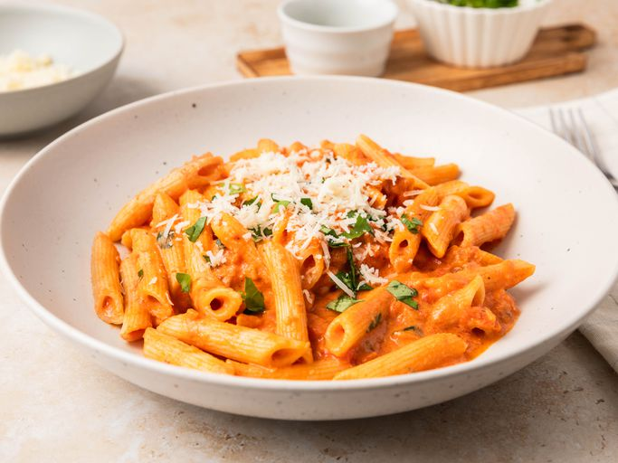

Penne Alla Vodka

Description
A dish which consists purely of sauced pasta, this dish quickly became the poster child dish of 'you have no idea how long it takes to make a good sauce from scratch until you have to wait for alchohol to cook out of it.' Speaking from personal experience, the answer is about 3.5-4 hours.
Ingredients
- 1 (28oz) can whole peeled tomatoes (San Marzano recommended)
- 2 tbsp olive oil
- 3 oz pancetta, diced
- ½ cup onion, finely chopped
- 2 cloves garlic, finely minced
- ¼ tsp crushed red pepper
- 3 tbsp tomato paste
- ⅔ cup vodka
- 1 lb penne pasta
- 1 cup heavy cream
- ¼ tsp pepper
- ⅔ cup parmesan cheese, freshly grated
- 2 tbsp parsley, finely chopped
- 3 tbsp fresh basil, chopped
Directions
- Place a large pot of salted water over high heat to bring to a boil. Pour tomatoes in a medium bowl and crush well with hands or chop in a food processor. Set aside.
- While water heats, prepare the sauce: Heat oil and pancetta in a large saucepan or deep skillet over medium-high heat. Cook, stirring frequently until pancetta is crisp, about 5 minutes. Add onion and cook, stirring constantly, until translucent, about 3 minutes. Add garlic and crushed red pepper and cook for 1 minute. Add tomato paste and cook, stirring often, until the tomato paste has taken on a slight brownish color, 2 to 3 minutes. Add vodka and cook until reduced by at least half. Stir in reserved tomatoes and juices and bring mixture to a simmer. Reduce heat and simmer until thickened, about 10 minutes.
- While sauce reduces, add pasta to boiling water and cook, according to package directions until al dente, 9 to 10 minutes.
- Once sauce is reduced, stir in heavy cream and pepper and cook for 3 minutes, stirring often. Stir in 1/3 cup cheese, parsley, basil and pasta until well combined. Season with additional salt and pepper if desired.
- Sprinkle with remaining cheese and more herbs, if desired, and serve.